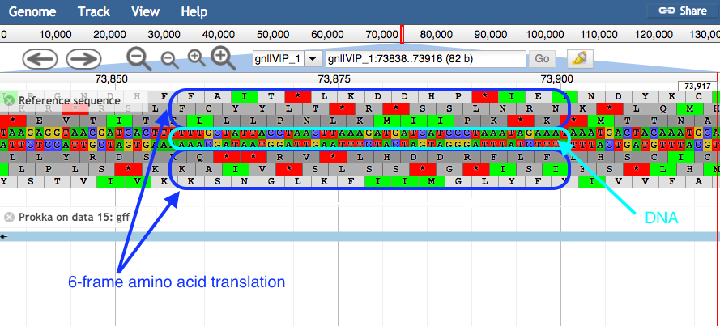

Genome annotation with Prokka
OverviewQuestions:
Objectives:
How can we annotate a bacterial genome?
How can we visualize annotated genomic features?
Requirements:
Load genome into Galaxy
Annotate genome with Prokka
View annotations in JBrowse
Time estimation: 1 hourLevel: Introductory IntroductorySupporting Materials:Published: Mar 6, 2018Last modification: Aug 7, 2024License: Tutorial Content is licensed under Creative Commons Attribution 4.0 International License. The GTN Framework is licensed under MITpurl PURL: https://gxy.io/GTN:T00168rating Rating: 3.8 (0 recent ratings, 17 all time)version Revision: 25
In this section we will use a software tool called Prokka to annotate a draft genome sequence. Prokka is a “wrapper”; it collects together several pieces of software (from various authors), and so avoids “re-inventing the wheel”.
Prokka finds and annotates features (both protein coding regions and RNA genes, i.e. tRNA, rRNA) present on on a sequence. Note, Prokka uses a two-step process for the annotation of protein coding regions: first, protein coding regions on the genome are identified using Prodigal; second, the function of the encoded protein is predicted by similarity to proteins in one of many protein or protein domain databases. Prokka is a software tool that can be used to annotate bacterial, archaeal and viral genomes quickly, generating standard output files in GenBank, EMBL and gff formats. More information about Prokka can be found in Prokka’s github link.
AgendaIn this tutorial, we will deal with:
Import the data
Prokka requires assembled contigs.
Hands-on: Obtaining our data
Make sure you have an empty analysis history. Give it a name.
To create a new history simply click the new-history icon at the top of the history panel:
Import the following files from Zenodo or from the shared data library
https://zenodo.org/record/1156405/files/contigs.fasta
- Copy the link location
Click galaxy-upload Upload Data at the top of the tool panel
- Select galaxy-wf-edit Paste/Fetch Data
Paste the link(s) into the text field
Press Start
- Close the window
As an alternative to uploading the data from a URL or your computer, the files may also have been made available from a shared data library:
- Go into Data (top panel) then Data libraries
- Navigate to the correct folder as indicated by your instructor.
- On most Galaxies tutorial data will be provided in a folder named GTN - Material –> Topic Name -> Tutorial Name.
- Select the desired files
- Click on Add to History galaxy-dropdown near the top and select as Datasets from the dropdown menu
In the pop-up window, choose
- “Select history”: the history you want to import the data to (or create a new one)
- Click on Import

Annotate the genome
Now we will run the tool called Prokka.
Hands-on: Annotate genome
- Prokka ( Galaxy version 1.14.5+galaxy0) with the following parameters (leave everything else unchanged)
- param-file “contigs to annotate”:
contigs.fasta
Examine the output
Once Prokka has finished, examine each of its output files.
- The GFF and GBK files contain all of the information about the features annotated (in different formats.)
- The .txt file contains a summary of the number of features annotated.
- The .faa file contains the protein sequences of the genes annotated.
- The .ffn file contains the nucleotide sequences of the genes annotated.
View annotated features in JBrowse
Now that we have annotated the draft genome sequence, we would like to view the sequence in the JBrowse genome viewer. First, we have to make a JBrowse file. Then, we can view it within Galaxy.
Hands-on: Visualize the annotation
- JBrowse ( Galaxy version 1.16.11+galaxy1) with the following parameters
- “Reference genome to display”:
Use a genome from history
- param-file “Select the reference genome”:
fnaoutput of Prokka ( Galaxy version 1.14.5+galaxy0)This sequence will be the reference against which annotations are displayed
- “Produce Standalone Instance”:
Yes- “Genetic Code”:
11: The Bacterial, Archaeal and Plant Plastid CodeClick on
Insert Track GroupWe will now set up one track - each track is a dataset displayed underneath the reference sequence (which is displayed as nucleotides in FASTA format). We will choose to display the annotations (the Prokka.gff file).
- In 1: Track Group
- “Track Category”:
gene annotations- Click on
Insert Annotation Trackand fill it with:
- “Track Type”:
GFF/GFF3/BED Features- param-file “GFF/GFF3/BED Track Data”:
gffoutput of Prokka ( Galaxy version 1.14.5+galaxy0)A new file will be created in your history, this contains the JBrowse interactive visualisation. We will now view its contents and play with it
Inspect the
JBrowse on data XX and data XX - Completefile by clicking on the galaxy-eye (eye) iconThe JBrowse window will appear in the centre Galaxy panel.
- Display all the tracks and practice maneuvering around
- Click on the tick boxes on the left to display the tracks
- Select contig 1 in the drop down box. You can only see one contig displayed at a time.
- Zoom by clicking on the
plusandminusbuttons.- JBrowse displays the sequence and a 6-frame amino acid translation.
- Right click on a gene/feature annotation (the bars on the annotation track), then select View Details to see more information.
- gene name
- product name
- you can download the FASTA sequence by clicking on the disk icon 
{kind=link}
What’s Next
After automatic annotation of prokaryotic genome, if inspection of predicted genes with JBrowse introduced mistakes, e.g. wrong exon/intron limits, splitted genes, or merged genes – or simply if you wish to rename genes or provide additional functional (e.g., Gene Ontology) data, setting up a manual curation project using Apollo helps a lot to manually fix these errors.
The Apollo training should provide additional guidance.